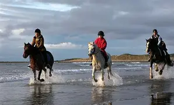
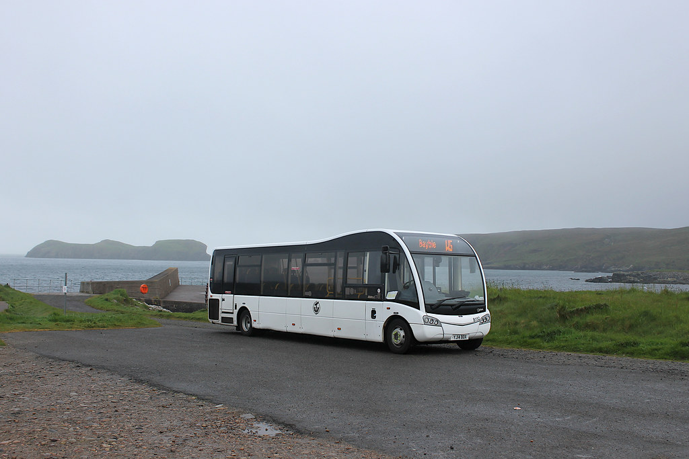
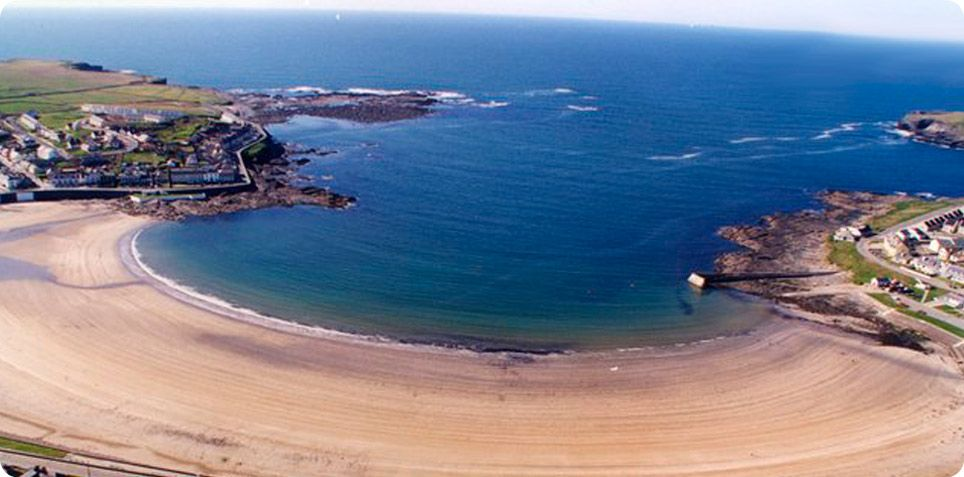
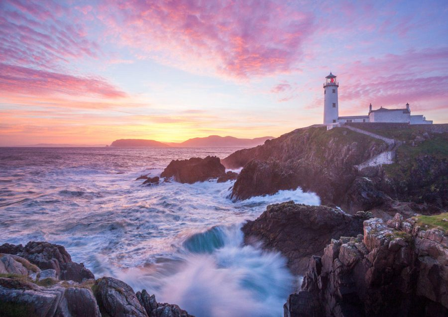

Wild Atlantic Way

Things to keep you busy while seeing the wild atlantic way!
Welcome to the Wild Atlantic Way, Ireland’s most iconic coastal route, where adventure awaits at every turn. Stretching over 2,500 kilometers along the rugged west coast, this scenic drive offers a wealth of unforgettable experiences. From thrilling hikes along cliff-edge trails to exploring charming coastal villages, the Wild Atlantic Way is a haven for nature lovers, thrill-seekers, and cultural enthusiasts alike. Whether you're chasing the perfect surf, discovering ancient ruins, or simply soaking in breathtaking ocean views, there's no shortage of activities to make your journey along Ireland’s Wild Atlantic Way truly remarkable.
Horse riding
One of the most magical experiences along the Wild Atlantic Way is beach horse riding, where you can gallop along golden sands with the sound of the waves crashing beside you. The region’s unspoiled beaches, like those at County Donegal, County Kerry, and County Clare, offer the perfect setting for this unforgettable activity. Whether you're a seasoned rider or a beginner, local equestrian centres cater to all levels, ensuring a safe and enjoyable ride. Feel the wind in your hair and the salty sea breeze as you traverse miles of shoreline, with stunning views of rugged cliffs, rolling dunes, and the vast Atlantic Ocean. It’s a true way to connect with the wild beauty of Ireland’s coast while making lasting memories.
Bus Tours
For those who prefer to sit back and let someone else do the driving, bus tours along the Wild Atlantic Way offer a convenient and comfortable way to explore the breathtaking coastline. These guided tours allow you to soak in the stunning landscapes, from towering cliffs to hidden coves, without the stress of navigating winding roads. Expert guides bring the region's history, culture, and folklore to life, offering fascinating insights into each stop along the route. Whether you're visiting iconic landmarks like the Cliffs of Moher or discovering more secluded gems, bus tours give you the chance to relax and truly immerse yourself in the beauty of Ireland's west coast. With a range of tour options available, from day trips to multi-day excursions, there's a perfect itinerary for every traveler.
Kilkee beach
Spending the day at Kilkee Beach is a perfect way to enjoy the natural beauty and relaxed charm of Ireland’s west coast. Nestled in a horseshoe-shaped bay in County Clare, Kilkee Beach offers golden sands, calm waters, and stunning cliffside views, making it ideal for families, swimmers, and beachcombers alike. The sheltered bay is great for safe swimming and snorkeling, while nearby rock pools and the famous Pollock Holes—natural tidal pools—provide endless fun for curious explorers. After a refreshing dip or a stroll along the promenade, you can enjoy a bite to eat at one of the local cafés or grab traditional fish and chips to enjoy on the beach. Whether you’re soaking up the sun, taking in the dramatic Atlantic views, or simply unwinding to the sound of the waves, a day at Kilkee Beach captures the laid-back magic of the Wild Atlantic Way.
In Conclusion
Whether you're chasing adventure, exploring charming coastal towns, or simply soaking in the natural beauty, the Wild Atlantic Way offers an unforgettable journey through the heart and soul of Ireland's rugged west coast. With so many incredible activities to choose from—beach horse riding, scenic bus tours, coastal hikes, and relaxing days by the sea—every moment spent here is rich with discovery and wonder. So pack your sense of adventure, hit the open road, and let the Wild Atlantic Way lead you to experiences you’ll treasure for a lifetime.